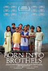
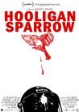
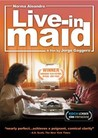

Movie Releases By Score

|
1401.
It Comes at Night
Release Date:
June 9, 2017

A man (Joel Edgerton) learns that the evil stalking his family home may be only a prelude to horrors that come from within. Secure within a desolate home as an unnatural threat terrorizes the world, the tenuous domestic order he has established with his wife and son is put to the ultimate test with the arrival of a desperate young family seeking refuge. Despite the best intentions of both families, paranoia and mistrust boil over as the horrors outside creep ever-closer, awakening something hidden and monstrous within him as he learns that the protection of his family comes at the cost of his soul. [A24]
|

|
1402.
Please Give
Release Date:
April 30, 2010
Kate has a lot on her mind. There’s the ethics problem of buying furniture on the cheap at estate sales and marking it up at her trendy Manhattan store. There’s the materialism problem of not wanting her teenage daughter to want the expensive things that Kate wants. There’s the marriage problem of sharing a partnership in parenting, business, and life with her husband Alex but sensing doubt nibbling at the foundations. And there’s Kate’s free-floating 21st century malaise—the problem of how to live well and be a good person when poverty, homelessness, and sadness are always right outside the door.
Plus, there’s the neighbors: cranky, elderly Andra and the two granddaughters who look after her. As Kate, Alex, and Abby interact with the people next door, with each other, and with their New York surroundings, a complex mix of animosity, friendship, deception, guilt, and love plays out with both sharp humor and pathos. (Sony Pictures Classics)
|

|
1403.
Hellboy II: The Golden Army
Release Date:
July 11, 2008

After an ancient truce existing between humankind and the invisible realm of the fantastic is broken, hell on Earth is ready to erupt. A ruthless leader who treads the world above and the one below defies his bloodline and awakens an unstoppable army of creatures. Now, it’s up to the planets toughest, roughest superhero to battle the merciless dictator and his marauders. He may be red. He may be horned. He may be misunderstood. But when you need the job done right, it’s time to call in Hellboy. (Universal Pictures)
|

|
1404.
The Sisters Brothers
Release Date:
September 21, 2018
Based on Patrick Dewitt's acclaimed novel of the same name, The Sisters Brothers follows two brothers - Eli and Charlie Sisters - who are hired to kill a prospector who has stolen from their boss. The story, a genre-hybrid with comedic elements, takes place in Oregon in 1851.
|

|
1405.
Tabu
Release Date:
December 26, 2012
A restless retired woman teams up with her deceased neighbor's maid to find a man who has a secret connection to her past life as a farm owner at the foothill of Mount Tabu in Africa.
|

|
1406.
Painted Fire
Release Date:
February 14, 2003
Im Kwon-taek's ninety-fifth film tells the story of renowned nineteenth-century painter Jang Seung-up (Choi Min-Sik), an artist whose revolutionary work - and persona - has forever changed the face of Korean art. (Kino International)
|

|
1407.
How I Killed My Father
Release Date:
August 23, 2002
Deals with the complex and fascinating relationship between 40 year-old Jean-Luc (Berling), a successful gerontologist living in a wealthy Parisian suburb, and his long estranged father (Bouquet).
|

|
1408.
Lumumba
Release Date:
June 27, 2001
At the Berlin Conference of 1885, Europe divided up the African continent. The Congo became the personal property of King Leopold II of Belgium. On June 30, 1960, a young self-taught nationalist, Patrice Lumumba, became, at age 36, the first head of government of the new independent state. He would last two months in office. (Zeitgeist Films)
|

|
1409.
Rocks in My Pockets
Release Date:
September 3, 2014
Fighting for her sanity, Signe Baumane uses wit and imagination to confront the secrets of her family's madness.
|

|
1410.
Speed
Release Date:
June 10, 1994
Keanu Reeves stars as Jack Traven an LAPD SWAT team specialist who is sent to diffuse a bomb that a revenge-driven extortionist (Hopper) has planted on a bus. But until he does, Jack and passenger Sandra Bullock must keep the bus speeding through the streets of Los Angeles at more than 50 miles per hour -- or the bomb will explode. A high-octane chase of suspense, non-stop action and surprise twists, Speed is a joyride sure to keep everyone on the edge of their seats. (20th Century Fox)
|
1411.
Putty Hill
Release Date:
February 18, 2011
At a neighborhood karaoke bar, friends and family gather to remember a young man who passed away. Knowing little about his final days, they attempt to reconstruct his life. In the process, they offer a window onto their own lives, an evocative picture of working-class America, dislocated from the progress and mobility around them, but united in pursuit of a shared dream. [The Cinema Guild]
|
|
|  |
1412.
Born Into Brothels: Calcutta's Red Light Kids
Release Date:
December 8, 2004
This documentary is an inspiring look at the transformative journey of a group of extraordinary children in Calcutta's red light district. (ThinkFilm)
|

|
1413.
Breathe
Release Date:
September 11, 2015
Charlie (Joséphine Japy) is seventeen and bored. Her estranged parents are too caught up in their own drama to pay her much attention. School holds no surprises either, and Charlie grows tired of her staid friends. Enter Sarah (Lou de Laâge), a confident and charismatic new transfer student who brings with her an alluring air of boldness and danger. The two form an instant connection, and through shared secrets, love interests and holiday getaways their relationship deepens to levels of unspoken intimacy. But with this intimacy comes jealousy and unrealistic expectations, and soon the teens find themselves on a dangerous trajectory toward an inevitable and unforeseen collapse. [Film Movement]
|

|
1414.
Under the Skin
Release Date:
April 4, 2014
An alien seductress (Scarlett Johansson) preys upon hitchhikers in Scotland.
|

|
1415.
The Grief of Others
Release Date:
November 2, 2018
The Ryries have suffered a loss: the death of a baby just fifty-seven hours after his birth. Without words to express their grief, the parents, John and Ricky, try to return to their previous lives. The couple's children, ten-year-old Biscuit and thirteen-year-old Paul, responding to the unnamed tensions around them, begin to act out in exquisitely idiosyncratic ways. But as the family members scatter into private, isolating grief, an unexpected visitor arrives, and they find themselves growing more alert to the hurt, humor, warmth, and burdens of others—to the grief that is part of every human life but that also carries within it the power to draw us together.
|

|
1416.
Barracuda
Release Date:
October 6, 2017
A strange woman comes to Texas to meet her half-sister and stake a claim to the family music legacy-one way or another.
|

|
1417.
Clash
Release Date:
August 25, 2017
Set entirely within the confines of a police van, Clash dramatizes the ongoing political unrest in Egypt two years after the Arab Spring. It’s 2013 and mass protests have led to the ouster of the ruling Muslim Brotherhood by the army. A series of arrests finds rival demonstrators trapped in a paddywagon together under the threat of impossibly stifling heat. From this simple setup, Mohamed Diab weaves a white-knuckled tale of resistance and shared humanity that artfully evokes the political fault lines in the Arab world’s most populous nation. [Kino Lorber]
|

|
1418.
Amanda Knox
Release Date:
September 30, 2016
American exchange student Amanda Knox is convicted and eventually acquitted for the 2007 death of another student in Italy.
|

|
1419.
The Color Purple
Release Date:
December 18, 1985
In rural Georgia during the first half of the 20th century, Celie (Whoopi Goldberg) is married off to an abusive man (Danny Glover) after becoming pregnant by her own father. Based on Alice Walker's Pulitzer Prize-winning novel.
|

|
1420.
High Flying Bird
Release Date:
February 8, 2019
In the midst of a pro basketball lockout, sports agent Ray Burke (André Holland) finds himself caught in the face-off between the league and the players. His career is on the line, but Ray is playing for higher stakes. With only 72 hours to pull off a daring plan, he outmaneuvers all the power-players as he uncovers a loophole that could change the game forever. The outcome raises questions of who owns the game – and who ought to.
|

|
1421.
5 Broken Cameras
Release Date:
May 25, 2012
An extraordinary work of both cinematic and political activism, 5 Broken Cameras is a deeply personal, first-hand account of non-violent resistance in Bil'in, a West Bank village threatened by encroaching Israeli settlements. Shot almost entirely by Palestinian farmer Emad Burnat, who bought his first camera in 2005 to record the birth of his youngest son, the footage was later given to Israeli co-director Guy Davidi to edit. Structured around the violent destruction of each one of Burnat's cameras, the filmmakers' collaboration follows one family's evolution over five years of village turmoil. Burnat watches from behind the lens as olive trees are bulldozed, protests intensify, and lives are lost. "I feel like the camera protects me," he says, "but it's an illusion." (Kino Lorber)
|

|
1422.
Dirty Pretty Things
Release Date:
July 18, 2003
A thriller set in London's secret underworld, where everything is for sale. A young man (Ejiofor) and a Turkish chambermaid (Tautou) both work at the same West London hotel -- a breeding ground for illegal activity. They are put to the test when the man makes a shocking discovery late one night. (Miramax Films)
|

|
1423.
Amandla! A Revolution in Four Part Harmony
Release Date:
February 19, 2003
Amandla! tells the story of black South African freedom music and reveals the central role it played in the long battle against apartheid. (Artisan Entertainment)
|

|
1424.
Punch-Drunk Love
Release Date:
October 11, 2002
Paul Thomas Anderson's fourth film features Sandler as a lonely man with serious emotional issues. As he concocts a scheme involving frequent flier miles and copious amounts of pudding, he finds himself both falling prey to a phone-sex scam and falling in love with his sister's colleague.
|

|
1425.
How to Draw a Bunny
Release Date:
October 9, 2002
A "Rashomon"-like portrait of Ray Johnson whose life and death -- and all the art that came in between - made him "New York's most famous unknown artist" (Grace Glueck, NY Times). (Film Forum)
|

|
1426.
Diamond Men
Release Date:
September 28, 2001
An aging diamond salesman (Forster) with a heart condition is forced to train a brash, inexperienced kid (Wahlberg) with whom he clashes almost immediately.
|

|
1427.
The Thin Red Line
Release Date:
January 8, 1999
The Thin Red Line tells the story of a group of men, an Army Rifle company called C-for-Charlie, who change, suffer and ultimately make essential discoveries about themselves during the fierce World War II battle of Guadalcanal. (Fox)
|

|
1428.
O'Horten
Release Date:
May 22, 2009
The moment the train leaves the station without engineer Odd Horten aboard, he realizes that the path ahead is a journey without printed timetables and well-known stations. Horten has been forced to retire after 40 years of traveling a very stable rail, and the platform does not feel like a safe place anymore. His orderly, solitary existence is about to give way to a future of unlikely adventures and puzzling dilemmas: will Horten ever travel by plane? Will he finally sell his prized boat? How does Horten end up in a pair of women's red high-heeled shoes? Will he survive a nighttime drive with a blindfolded man at the wheel? Proof positive that there is humor to be found in aging, and we don't have to be elderly Norwegians to identify, laugh and embrace life in all its idiosyncratic splendor. O’Horten is Bent Hamer's wonderfully skewed view of the human condition and gives us that somewhat absurdist vision with great warmth, a little melancholy and universal appeal. (Sony Pictures Classics)
|

|
1429.
In Between
Release Date:
January 5, 2018
Lalia (Mouna Hawa), Salma (Sana Jammelieh), and Nur (Shaden Kanboura) share an apartment in the vibrant heart of Tel Aviv. Lalia, a criminal lawyer with a wicked wit, loves to burn off her workday stress in the underground club scene. Salma, slightly more subdued, is a DJ and bartender. Nur is a younger, religious Muslim girl who moves into the apartment in order to study at the university. Nur is both intrigued and intimidated by her two sophisticated roommates. When her conservative fiance visits, he is horrified by her secular friends, entreating her to hasten their marriage, leave Tel Aviv, and assume her rightful role as a wife. She refuses, and his violent rebuttal leaves all of the women shaken. Salma and Lalia also face turmoil: Lalia has found love with a modern Muslim man whose acceptance proves less than unconditional, and Salma discovers that her Christian family in a northern Galilean village is not as liberal as they claim. These three very different women find themselves doing the same balancing act between tradition and modernity, citizenship and culture, fealty and freedom. [Film Movement]
|

|
1430.
Pray the Devil Back to Hell
Release Date:
November 7, 2008
Pray the Devil Back to Hell is the extraordinary story of a small band of Liberian women who came together in the midst of a bloody civil war, took on the violent warlords and corrupt Charles Taylor regime, and won a long-awaited peace for their shattered country in 2003. As the rebel noose tightened upon Monrovia, and peace talks faced collapse, the women of Liberia – Christian and Muslims united - formed a thin but unshakable white line between the opposing forces, and successfully demanded an end to the fighting– armed only with white T-shirts and the courage of their convictions. (Balcony Releasing)
|

|
1431.
Paris, Texas
Release Date:
November 2, 1984
Travis Henderson, an aimless drifter who has been missing for four years, wanders out of the desert and must reconnect with society, himself, his life, and his family.
|

|
1432.
Born to Fly
Release Date:
September 10, 2014
Elizabeth Streb and the STREB Extreme Action Company form a motley troupe of flyers and crashers. Propelled by Streb’s edict that “anything too safe is not action,” these daredevils challenge the assumptions of art, aging, injury, gender, and human possibility. Born to Fly traces the evolution of Elizabeth Streb’s movement philosophy as she pushes herself and her performers from the ground to the sky.
|

|
1433.
After Dark, My Sweet
Release Date:
August 24, 1990
An ex-boxer is drifting around after escaping from the mental hospital. He meets a widow who convinces him to help fix up the neglected estate her ex-husband left. Her Uncle talks them both into helping kidnap a rich boy for ransom money, and the ex-fighter must make decisions about his loyalties and what is right.
|

|
1434.
A Silent Voice
Release Date:
October 20, 2017
A Silent Voice follows the poignant and moving story of Shōya Ishida, a school bully, and Shōko Nishimiya, a young girl with a hearing disability. Their story begins in sixth grade when Shōko transfers to Shōya’s elementary school and quickly finds herself bullied and isolated due to her hearing disability. Years later, the tables turn, and Shōya finds himself the victim. A Silent Voice depicts the struggles and challenges of adolescence alongside coming-of-age outside the norm. [Eleven Arts]
|

|
1435.
I, Daniel Blake
Release Date:
December 23, 2016
Winner of the Palme d’Or at the 2016 Cannes Film Festival, the latest from legendary director Ken Loach is a gripping, human tale about the impact one man can make. Gruff but goodhearted, Daniel Blake (Dave Johns) is a man out of time: a widowed woodworker who’s never owned a computer, he lives according to his own common sense moral code. But after a heart attack leaves him unable to work and the state welfare system fails him, the stubbornly self-reliant Daniel must stand up and fight for his dignity, leading a one-man crusade for compassion that will transform the lives of a struggling single mother (Hayley Squires) and her two children. [IFC Films]
|

|
1436.
The Counterfeiters
Release Date:
February 22, 2008
The true story of Salomon Sorowitsch, counterfeiter extraordinaire and bohemian who was in captured by the Nazis in 1944. He agrees to help the Nazis in an organized counterfeiting operation set up to finance the war effort. It was the biggest counterfeit-money scam of all time. Over 130 million pounds sterling were printed under conditions that couldn't have been more tragic or spectacular. During the last years of the war, as the German Reich saw that the end was near, the authorities decided to produce their own banknotes in the currencies of their major war enemies. They hoped to use the duds to flood the enemy economy and fill the empty war coffers. At the Sachsenhausen concentration camp, two barracks were separated from the rest of the camp and the outside world, and transformed into a fully equipped counterfeiters workshop. "Operation Bernhard" was born. Prisoners were brought to Sachsenhausen from other camps to implement the plan, and professional printers, fastidious bank officials, and simple craftsmen all became members of the top-secret counterfeiter crew. They had a choice: If they cooperated with the enemy, they had a chance to survive as first-class prisoners in a "golden cage" with enough to eat and a bed to sleep in. If they sabotaged the operation, a sure death awaited them. For the counterfeiters, it was not only a question of saving their own lives, but also about saving their conscience as well... (Sony Classics)
|

|
1437.
Roman Polanski: Wanted and Desired
Release Date:
July 11, 2008
Reopening a case that has inspired curiosity, controversy, and confusion for over three decades, Roman Polanski: Wanted and Desired is an extensive exploration of the circumstances that led up to – and the circus that followed – Polanski’s conviction for having unlawful sexual intercourse with a minor. Zenovich had unprecedented access to several of the key players in the case, including the lawyers representing the case, the media covering it, and the unusually clear-eyed and candid victim. Unearthing a trove of telling footage from the past, and combining it with insightful interviews from today, she brings comprehension and clarity to events long clouded by myth and misconception. A thrilling examination of a case that became the prototype for innumerable Hollywood courtroom scandals to follow, the film becomes a brilliant discourse on the attraction/ repulsion that defines celebrity culture in contemporary America. (THINKFilm)
|

|
1438.
After the Wedding
Release Date:
March 30, 2007
Sweeping, yet entirely intimate, After the Wedding is a shattering portrait of a family struggling with the fragility of life and the search for connection, healing, and forgiveness. [IFC Films]
|

|
1439.
The Dark Knight Rises
Release Date:
July 20, 2012
It has been eight years since Batman vanished into the night, turning, in that instant, from hero to fugitive. Assuming the blame for the death of D.A. Harvey Dent, the Dark Knight sacrificed everything for what he and Commissioner Gordon both hoped was the greater good. For a time the lie worked, as criminal activity in Gotham City was crushed under the weight of the anti-crime Dent Act. But everything will change with the arrival of a cunning cat burglar with a mysterious agenda. Far more dangerous, however, is the emergence of Bane, a masked terrorist whose ruthless plans for Gotham drive Bruce out of his self-imposed exile. But even if he dons the cape and cowl again, Batman may be no match for Bane. (Warner Bros. Pictures)
|

|
1440.
The Lost City of Z
Release Date:
April 14, 2017
In 1925, Lieutenant Colonel Percy Fawcett (Charlie Hunnam), a British military-man-turned-explorer, searches for a lost city deep in the Amazon. His quest grows into an increasingly feverish, decades-long magnificent obsession that takes a toll on his reputation, his home life with his wife (Sienna Miller) and children, and his very existence.
|

|
1441.
Devil in a Blue Dress
Release Date:
September 29, 1995
Denzel Washington stars as Ezekiel "Easy" Rawlins, a decorated war hero who returns home to the segregation of post-war America. Forced to accept an under-the-table job finding a missing socialite, Easy is caught between the white power elite and the vibrant black community of Central Avenue. And as soon as Easy and his trigger-happy friend Mouse (Cheadle) find the mysterious Daphne Monet (Beals), trouble follows. (Sony)
|

|
1442.
The Devil's Backbone
Release Date:
November 21, 2001
A ghost story set in a Catholic orphanage during the Spanish Civil War.
|

|
1443.
Blind Shaft
Release Date:
February 4, 2004
This film tells the story of two itinerant Chinese miners who risk their lives under dangerous working conditions and develop questionable morals in order to survive. (Kino International)
|

|
1444.
Southern Comfort
Release Date:
February 23, 2001
Against the backdrop of rural Georgia, this documentary is a portrait of Robert Eads, a transgender female-to-male dealing with ovarian cancer.
|

|
1445.
A Time for Drunken Horses
Release Date:
October 27, 2000
When the youngest boy of a destitute Iranian Kurdish family suffers from a terminal illness, his young siblings struggle to pay for a life-saving operation. (Shooting Gallery)
|

|
1446.
Midnight Run
Release Date:
July 20, 1988
Bounty hunter Jack Walsh (De Niro) is offered $100,000 from a bail bondsman to capture fugitive accountant Jonathan "the Duke" Mardukas (Grodin) and bring him to Los Angeles in time for his trial date. Walsh must avoid a rival bounty hunter, the FBI, and the mob to earn his payday.
|

|
1447.
The Guard
Release Date:
July 29, 2011
The Guard is a comedic, fish-out-of-water tale of murder, blackmail, drug trafficking and rural police corruption, and the two cops who must join forces to take on an international drug-smuggling gang, an unorthodox Irish policeman and a straitlaced FBI agent.(Sony Picture Classics)
|

|
1448.
Bathtubs Over Broadway
Release Date:
November 30, 2018
A late night comedy writer stumbles upon a hilarious, hidden world of entertainment and finds an unexpected connection to his fellow man.
|

|
1449.
No Home Movie
Release Date:
April 1, 2016
Chantal Akerman films her mother, an old woman of Polish origin who is short lifetime, in her apartment in Brussels. For two hours, we will see them eating, chatting and sharing memories, sometimes accompanied by Sylvaine, Chantal's sister. Also, and to show how small the world has become, Chantal remains in contact with her mother at other times of the year via Skype from lands as far away from Belgium as Oklahoma or New York.
|

|
1450.
Pavilion
Release Date:
March 1, 2013
Max, a laconic teenager, leaves his lakeside town to live with his father on the fringe of suburban Arizona.
|
|  |
1451.
Hooligan Sparrow
Release Date:
July 22, 2016
When a Chinese elementary school principal who raped six of his students seems poised to receive a light sentence, famed women’s rights advocate Ye Haiyan (AKA Hooligan Sparrow) leads a group of activists in a protest – a move that could end with each participant’s arrest. As filmmaker Nanfu Wang films the demonstration and its aftermath, she becomes embroiled in the government’s effort to harass and intimidate everyone associated with the protest. After being threatened by angry mobs, chased by police, and interrogated by national security agents, Wang discovers the Chinese government’s willingness to target anyone they perceive to be a threat to their control.
|

|
1452.
Ex Machina
Release Date:
April 10, 2015
Caleb Smith (Domhnall Gleeson), a programmer at an internet-search giant, wins a competition to spend a week at the private mountain estate of the company’s brilliant and reclusive CEO, Nathan Bateman (Oscar Isaac). Upon his arrival, Caleb learns that Nathan has chosen him to be the human component in a Turing Test—charging him with evaluating the capabilities, and ultimately the consciousness, of Nathan’s latest experiment in artificial intelligence. That experiment is Ava (Alicia Vikander), a breathtaking A.I. whose emotional intelligence proves more sophisticated, seductive––and more deceptive––than the two men could have imagined.
|

|
1453.
A Gentle Creature
Release Date:
TBA
One day, a woman receives the parcel she sent to her incarcerated husband some time earlier. Confused and deeply concerned, she decides to go to the prison in a remote area of Russia, to seek information. So begins the story of a journey rife with humiliations and violence, the story of an absurd battle against an impenetrable fortress.
|
1454.
The Tribe
Release Date:
June 17, 2015
Somewhere in Ukraine, Sergey enters a specialized boarding school for the deaf. Alone in this new and unfamiliar place, he must find his way through the school’s hierarchy. Sergey quickly encounters the tribe, a student gang dealing in crime and prostitution. After passing their hazing rituals and being inducted into the group, he takes part in several robberies and begins to work his way up the chain of command to become pimp-protector for two of the girls, who turn tricks at the local truck stop. Finding himself in love with one of them, Sergey ultimately breaks all the unwritten rules of the tribe, with tragic consequences. [Drafthouse Films]
|
|

|
1455.
The Other Side of the Wind
Release Date:
November 2, 2018
Surrounded by fans and skeptics, grizzled director J.J. "Jake" Hannaford (John Huston) returns from years abroad in Europe to a changed Hollywood, where he attempts to make his comeback: a career summation that can only be the work of cinema's most adventurous filmmaker, Orson Welles. [Netlfix]
|

|
1456.
Booker's Place: A Mississippi Story
Release Date:
April 27, 2012
While filming a documentary in Mississippi in 1965, Frank De Felitta forever changed the life of an African-American waiter and his family. In 2011, Frank's son returns to the Delta to examine the repercussions of that fateful encounter.
|

|
1457.
Ryuichi Sakamoto: Coda
Release Date:
July 6, 2018
One of the most important artists of our era, Ryuichi Sakamoto has had a prolific career spanning over four decades. From techno-pop stardom to Oscar-winning film composer, the evolution of his music has coincided with his life journeys. Following Fukushima, Sakamoto became an iconic figure in Japan’s social movement against nuclear power. As Sakamoto returns to music following a cancer diagnosis, his haunting awareness of life crises leads to a resounding new masterpiece. Ryuichi Sakamoto: Coda is an intimate portrait of both the artist and the man.
|

|
1458.
The Real Dirt on Farmer John
Release Date:
January 20, 2006
The epic tale of a maverick Midwestern farmer. An outcast in his community, Farmer John transforms his world amidst a failing economy,vicious rumors, and violence. By melding the traditions of family farming
with the power of art and free expression,this quintessentially American story heralds a resurrection of farming in America. (Slow Hand Releasing)
|

|
1459.
Harry Potter and the Half-Blood Prince
Release Date:
July 15, 2009

Voldemort is tightening his grip on both the Muggle and wizarding worlds and Hogwarts is no longer the safe haven it once was. Harry suspects that dangers may even lie within the castle, but Dumbledore is more intent upon preparing him for the final battle that he knows is fast approaching. Together they work to find the key to unlock Voldemort's defenses and, to this end, Dumbledore recruits his old friend and colleague, the well-connected and unsuspecting bon vivant Professor Horace Slughorn, whom he believes holds crucial information. Meanwhile, one student remains aloof. He is determined to make his mark, albeit a dark one. Love is in the air, but tragedy lies ahead and Hogwarts may never be the same again. (Warner Bros.)
|

|
1460.
Zootopia
Release Date:
March 4, 2016
The modern mammal metropolis of Zootopia is a city like no other. Comprised of habitat neighborhoods like ritzy Sahara Square and frigid Tundratown, it’s a melting pot where animals from every environment live together—a place where no matter what you are, from the biggest elephant to the smallest shrew, you can be anything. But when optimistic Officer Judy Hopps arrives, she discovers that being the first bunny on a police force of big, tough animals isn’t so easy. Determined to prove herself, she jumps at the opportunity to crack a case, even if it means partnering with a fast-talking, scam-artist fox, Nick Wilde, to solve the mystery. [Walt Disney Animation Studios]
|

|
1461.
Innocence
Release Date:
October 21, 2005
In this cryptic story, a group of young girls are sequestered in a woodsy community where they are trained for ambiguous future roles.
|
|
|
1462.
Lost Boys of Sudan
Release Date:
February 18, 2004
A feature-length documentary that follows two Sudanese refugees on an extraordinary journey from Africa to America.
|

|
1463.
Best in Show
Release Date:
September 27, 2000
Centered at the Mayflower Kennel Club Dog Show, the film follows several bizarre dog owners and their sometimes neurotic pets.
|

|
1464.
Human Resources
Release Date:
September 15, 2000
Franck (Lespert), a Parisian business school student, takes an internship in the Human Resources department at the factory where his father (Vallod) has labored for 30 years. Franck's efforts lead to the firing of many employees, including his father. (Shooting Gallery)
|

|
1465.
Hard Eight
Release Date:
February 28, 1997
Sydney (Hall) is a poker-faced professional gambler with a soft heart for a hard luck story. He plays guardian angel to unlucky John (Reilly) and a hooker, Clementine (Paltrow), whom he grows to love like family. When John's and Clementine's honeymoon night leads to a disastrous hostage situation, Sydney takes care of it, as usual. But when slick casino pro Jimmy (Jackson) threatens to reveal a secret from Sydney's past that could destroy his relationship with the newlyweds, Sydney decides to hedge his bets and not leave anything to chance. (Sony)
|

|
1466.
House of Games
Release Date:
October 14, 1987
A psychiatrist comes to the aid of a compulsive gambler and is led by a smooth-talking grifter into the shadowy but compelling world of stings, scams, and con men.
|

|
1467.
Chariots of Fire
Release Date:
April 9, 1982
Two British track athletes, one a determined Jew and the other a devout Christian, compete in the 1924 Olympics.
|

|
1468.
Beach Rats
Release Date:
August 25, 2017
On the outskirts of Brooklyn, Frankie, an aimless teenager, suffocates under the oppressive glare cast by his family and a toxic group of delinquent friends. Struggling with his own identity, Frankie begins to scour hookup sites for older men. When his chatting and webcamming intensify, he begins meeting men at a nearby cruising beach while simultaneously entering into a cautious relationship with a young woman. As Frankie struggles to reconcile his competing desires, his decisions leave him hurtling toward irreparable consequences. [Neon]
|

|
1469.
Eve's Bayou
Release Date:
November 7, 1997
This emotional family drama is set in Louisiana in 1962.
|

|
1470.
Tex
Release Date:
July 30, 1982
After their mother dies and their father leaves them, teenage brothers Tex and Mason McCormick struggle to make it on their own.
|

|
1471.
Dr. No
Release Date:
May 8, 1963
A resourceful British government agent seeks answers in a case involving the disappearance of a colleague and the disruption of the American space program.
|

|
1472.
Much Ado About Nothing
Release Date:
June 7, 2013
Shakespeare’s classic comedy is given a contemporary spin by director Joss Whedon. Shot in just 12 days, the story of sparring lovers Beatrice and Benedick offers a dark, sexy and occasionally absurd view of the intricate game that is love. As matchmaking schemes are put into play and disguises are donned, loathing and love soon prove to be close cousins. [Lionsgate]
|

|
1473.
The Breadwinner
Release Date:
November 17, 2017
Parvana is an 11-year- old girl growing up under the Taliban in Afghanistan in 2001. When her father is wrongfully arrested, Parvana cuts off her hair and dresses like a boy in order to support her family. Working alongside her friend Shauzia, Parvana discovers a new world of freedom–and danger. With undaunted courage, Parvana draws strength from the fantastical stories she invents, as she embarks on a quest to find her father and reunite her family.
|

|
1474.
Ruthless People
Release Date:
June 27, 1986
A couple, cheated by a vile businessman, kidnap his wife in retaliation, without knowing that their enemy is delighted they did.
|

|
1475.
Up and Down
Release Date:
February 25, 2005
In the dead of the night, near the Czech-Slovak border, two smugglers discover their truckload of illegal Indian immigrants have left a baby behind. (Sony Pictures Classics)
|

|
1476.
Endless Poetry
Release Date:
July 14, 2017
Through Alejandro Jodorowsky's autobiographical lens, Endless Poetry narrates the years of the Chilean artist's youth during which he liberated himself from all of his former limitations, from his family, and was introduced into the foremost bohemian artistic circle of 1940s Chile where he met Enrique Lihn, Stella Diaz Varin, Nicanor Parra... at the time promising young but unknown artists who would later become the titans of twentieth-century Hispanic literature. He grew inspired by the beauty of existence alongside these beings, exploring life together, authentically and freely. A tribute to Chile's artistic heritage, Endless Poetry is also an ode to the quest for beauty and inner truth, as a universal force capable of changing one's life forever, written by a man who has dedicated his life and career to creating spiritual and artistic awareness across the globe.
|

|
1477.
Did You Wonder Who Fired the Gun?
Release Date:
February 28, 2018
In 1946, my great-grandfather murdered a black man named Bill Spann and got away with it." So begins Did You Wonder Who Fired the Gun?, filmmaker Travis Wilkerson critically acclaimed investigation into the murder, family history, and the societal mores that allowed it to happen. Wilkerson tells a frightening and troubling story, incorporating scenes from To Kill a Mockingbird, the music of Janelle Monáe and Phil Ochs, and a dogged search for the truth — one that unearths long-buried secrets, destroyed records, and real threats of violence.
|
1478.
Enchanted April
Release Date:
July 31, 1992
This slow-paced gem is about the civilizing influence of Italy on beleaguered Londoners both male and female and has its own civilizing influence on the viewer. It's almost like taking a little mini-trip to Italy, a gorgeously filmed enchantment.
|
|

|
1479.
The Last Mistress
Release Date:
June 27, 2008
The Last Mistress marks the monumental pairing of cinema's premiere provocateur, director Catherine Breillat with the most fearless and explosive actor of our generation, Asia Argento. A penniless rogue, Ryno de Marigny, shocks 19th century France with his engagement to the virginal gem of the aristocracy, Hermangarde. As lurid speculations of Ryno's ten year affair with the carnal Vellini manifest, a supremely erotic and wickedly humorous depiction of human lust is revealed - overriding the brittle facade of nobility and reverence. Bolstered by Breillat's mastery of the medium and Argento's commanding performance, The Last Mistress is a highly entertaining yet incredibly provocative film that has resulted in unanimous praise from audiences and critics across the world. (IFC Films)
|
|  |
1480.
Live-In Maid
Release Date:
July 18, 2007
Dora (51) is the maid of Mrs. Beba (59) and has worked and lived with her for 35 years. Beba used to be a well-to-do socialite but successive economic and personal crises have worn her out, reducing her to a purveyor of decadence. Nowadays she finds herself forced to sell door-to-door beauty products. And she owes Dora six months of salary. Dora, tired of listening to Beba’s promises of payment, is now determined to resign. Beba asks her for more time to get the money together. Dora accepts. During this period Beba tries to mine the confidence of Dora, discouraging her not to venture into a new phase of her life. Though doomed by class prejudices and abusive power codes there is also a bond cemented by mutual love from three decades of living together. Finally, Beba gets the money to cancel the debt and offers some cash in advance to make her maid stay. But Dora has already made up her mind. (Aqua Films)
|

|
1481.
The Saddest Music in the World
Release Date:
April 30, 2004
It's 1933 in Winnipeg and the Great Depression is in full bloom. Beer Baroness Lady Port-Huntly (Rossellini) announces a global competition to determine the saddest music in the world, and musicians from across the globe pour into town to vie for the whopping $25,000 prize. Part musical melodrama, part tongue-in-cheek social satire, Guy Maddin's expressionistic film achieves a level of lunacy rarely seen since the Marx Brothers. (IFC Films)
|

|
1482.
Insomnia
Release Date:
May 24, 2002
From acclaimed director Christopher Nolan ("Memento") comes the story of Will Dormer (Pacino), a veteran LAPD detective who travels to a small Alaskan town with his partner Hap (Donovan) to investigate the disturbing murder of a seventeen year-old girl. (Warner Bros.)
|

|
1483.
Lone Star
Release Date:
June 21, 1996
The unearthing of human bones and a rusty sheriff's badge on a rifle range in a Texas border town resurrects painful memories for a young lawman (Cooper), drawing him into an intricate, fascingatingly woven web of ethical, familial, and intercultural conflicts.
|

|
1484.
Thief
Release Date:
March 27, 1981
Becoming closer to his dream of leading a normal life, a professional safecracker agrees to do a job for the mafia, who have other plans for him.
|

|
1485.
Tracks
Release Date:
September 19, 2014
Robyn Davidson (Mia Wasikowska) treks 1,700 miles across the Western Australia desert with four camels and her faithful dog.
|

|
1486.
The Princess of Montpensier
Release Date:
April 15, 2011
In The Princess of Montpensier, acclaimed filmmaker Bertrand Tavernier directs a spectacular cast in a riveting, lush romantic drama set in the high courts of 16th Century France. Against the backdrop of the savage Catholic/Protestant wars, Marie de Mézières, a beautiful young aristocrat, finds herself married to a young prince she does not love, haunted by a rakish suitor Gaspard Ulliel from her childhood, and advised by an aging nobleman Lambert Wilson, harboring his own forbidden desire for her. The Princess of Montpensier must struggle passionately to stay alive in the intrigue of this corrupt political and romantic web of duty, passion, religion and war. (IFC Films)
|

|
1487.
The Man Who Knew Too Much
Release Date:
June 1, 1956
An American physician and his wife take matters into their own hands after assassins planning to execute a foreign prime minister kidnap their son.
|

|
1488.
The Fearless Freaks
Release Date:
May 27, 2005
This documentary offers an intimate look at one of today's most acclaimed alternative rock groups, The Flaming Lips. (Shout! Factory)
|

|
1489.
Zodiac
Release Date:
March 2, 2007
Based on the actual case files of one of the most intriguing unsolved crimes in the nation's history, Zodiac is a thriller from David Fincher, director of "Seven" and "Fight Club." As a serial killer terrifies the San Francisco Bay Area and taunts police with his ciphers and letters, investigators in four jurisdictions search for the murderer. The case will become an obsession for four men as their lives and careers are built and destroyed by the endless trail of clues. (Paramount Pictures)
|

|
1490.
Tempestad
Release Date:
October 20, 2017
Two women, a voyage in two voices, which, like reflections of a single echo, convey what fear means in the life of a human being. Highways, landscapes, gazes. Mexico from north to south in an era when violence has taken control of our lives, our desires and our dreams. An emotional and evocative journey, steeped not only in loss and pain, but also love, dignity and resistance.
|
1491.
The Case Against 8
Release Date:
June 6, 2014
The Case Against 8 takes a riveting, inside look at the groundbreaking Supreme Court case that overturned Proposition 8, California’s ban on same-sex marriage. Five years in the making, with exclusive behind-the-scenes access to the powerhouse legal team of Ted Olson and David Boies, who previously faced off as opposing counsel in Bush v. Gore, along with the four plaintiffs in the suit, the film provides a definitive account of the battle that effectively ended marriage discrimination in California.
|
|

|
1492.
The Devil Came on Horseback
Release Date:
July 25, 2007
The Devil Came on Horseback exposes the tragedy taking place in Darfur as seen through the eyes of an American witness who has since returned to the US to take action to stop it. Using the exclusive photographs and first hand testimony of former U.S. Marine Captain Briahn Steidle, The Devil Come on Horseback takes the viewer on an emotionally charged journey into the heart of Darfur, Sudan, where an Arab run government is systematically executing a plan to rid the province of it's black African citizens. As an official military observer, Steidle had access to parts of the country that no journalist could penetrate. He was unprepared for what he would witness and experience, including being fired upon, taken hostage, and being unable to intervene to save the lives of young children. Ultimately frustrated by the inaction of the international community, Steidle resigned and returned to the US to expose the images and stories of lives systematically destroyed. (Break Thru Films)
|

|
1493.
A Simple Life
Release Date:
April 12, 2012
Since her teenage years, Chung Chun-Tao has worked as an amah – a servant – for the Leung family. Known as Ah Tao, she witnessed every aspect of the family’s life. Now, after 60 years of service, she is looking after Roger, who works in the film industry and is the only member of the family still resident in Hong Kong. One day Roger comes home from work to find that Ah Tao has suffered a stroke. He rushes her to hospital, where she announces that she wants to quit her job and move into anursing home. Roger researches the possibilities and finds her a room in an establishment run by an old friend. Ah Tao moves in and begins acquainting herself with a new ‘family’: the brisk but fundamentally kindly supervisor Ms Choi and a motley crew of elderly residents, including the dapper Uncle Kin, the jealous Auntie Kam, the erudite ‘Headmaster’ and the good-hearted dialysis patient Mui Gu. Giving ever more time and attention to Ah Tao’s needs and pleasures, Roger comes to realise how much she means to him. Roger’s mother visits from California and suggests reclaiming an apartment building the family owns to provide Ah Tao with a final home of her own. But Ah Tao’s health begins to deteriorate rapidly. [China Lion Film Distribution]
|

|
1494.
Kedi
Release Date:
February 10, 2017
Hundreds of thousands of Turkish cats roam the metropolis of Istanbul freely. For thousands of years they’ve wandered in and out of people’s lives, becoming an essential part of the communities that make the city so rich. Claiming no owners, the cats of Istanbul live between two worlds, neither wild nor tame –and they bring joy and purpose to those people they choose to adopt. In Istanbul, cats are the mirrors to the people, allowing them to reflect on their lives in ways nothing else could.
|
1495.
Love Exposure
Release Date:
September 2, 2011
Yu is the son of a widower turned priest who is having an affair with one of his followers. When the affair ends, the priest begins pressuring his son to seek absolution for all his sins. The pressure to confess to his father becomes so demanding that Yu has to commit new sins to have material. This leads Yu to find porn stardom and meet the man-hating virgin of his dreams.
|
|

|
1496.
Goldstone
Release Date:
March 2, 2018
On the trail of a missing person, troubled indigenous detective Jay Swan (Aaron Pedersen) finds himself in the small mining town of Goldstone, where he is arrested for drunk driving by local cop Josh (Alex Russell). When Jay’s motel room is blasted with gun fire, it becomes clear that something larger is at play. While struggling to overcome their mutual distrust, Jay and Josh uncover a web of crime and corruption, which leads directly to the town’s cold-blooded Mayor (Jacki Weaver) and its smarmy gold mine director (David Wenham).
|

|
1497.
Waste Land
Release Date:
October 29, 2010
Filmed over nearly three years, WASTE LAND follows renowned artist Vik Muniz as he journeys from his home base in Brooklyn to his native Brazil and the world's largest garbage dump, Jardim Gramacho, located on the outskirts of Rio de Janeiro. There he photographs an eclectic band of "catadores" -- or self-designated pickers of recyclable materials. Muniz's initial objective was to "paint" the catadores with garbage. However, his collaboration with these inspiring characters as they recreate photographic images of themselves out of garbage reveals both the dignity and despair of the catadores as they begin to re-imagine their lives. Walker has great access to the entire process and, in the end, offers stirring evidence of the transformative power of art and the alchemy of the human spirit. (Arthouse Films)
|
1498.
Hitler's Hollywood
Release Date:
April 11, 2018
Filmmaker Rüdiger Suchsland suggests that the Third Reich was essentially an immersive movie starring the German nation, produced and directed by Propaganda Minister Joseph Goebbels. Hitler’s Hollywood collages key films from the more than 1000 features the Nazis produced from 1933-1945: musicals, melodramas, romances, costume dramas, war films – and when the real war got tough, insanely lavish, over-the-top fantasies. The German folk were portrayed as happy and sporty with lives of exaggerated cheerfulness or, conversely, full of morbid yearning for a death that would serve the Fatherland. Hannah Arendt gives perspective and context: “One of the chief characteristics of modern masses… (is) they do not trust their eyes and ears, but only their imaginations. What convinces masses are not facts, not even invented facts, but only the consistency of the illusion.” It’s a frightening insight that could just as easily apply to the American political landscape today. Narrated by Udo Kier [Film Forum]
|
|
|
|
1499.
Son frère
Release Date:
April 2, 2004
Thomas and Luc are brothers. Thomas is straight; Luc is gay. Unable to accept his brother's homosexuality, Thomas distances himself. When Thomas contracts a terminal illness, he intrudes into Luc's contented life and asks him to be his caretaker. (Strand Releasing)
|

|
1500.
Morvern Callar
Release Date:
December 20, 2002
An aimless supermarket clerk (Morton) in a small Scottish town gets a new lease on life upon discovering her boyfriend dead under their Christmas tree.
|